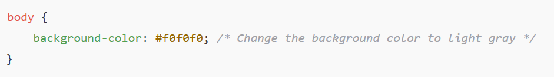

Coding a website in HTML takes care of 50% of the project, the next step is to embrace your inner artist!
CSS (Cascading Style Sheet) is typically used when designing a webpage. It is a separate file that is implemented into your HTML code which formats the code based on your design preferences.
An Inline Stylesheet is another way to design a webpage. Although it can be done, the process is outdated and can cause an HTML file to become messy.
When implementing designs into your webpage, it is important to consider CRAP Principles:
- Contrast: Contrast helps distinguish different elements, making the content easier to read and visually engaging.
- Repetition: Repeating design elements (colors, fonts, layouts) creates consistency and a cohesive look.
- Alignment: Proper alignment creates a clean, structured layout.
- Proximity: Grouping related elements together improves organization and usability.
Wondering what a CRAPPY Website would look like? Click here!
Image Gallery

CSS is used to change the background color to a light gray
Common CSS Properties
- Color: Sets text color.
- Example:
color: blue;
- Example:
- Background: Defines background color or images.
- Example:
background-color: lightgray;
- Example:
- Font: Sets font family and size.
- Example:
font-family: Arial, sans-serif;
- Example:
- Margin & Padding: Controls spacing around and inside elements.
- Border: Adds borders around elements.
- Example:
border: 2px solid black;
- Example:
- Display: Adjusts element visibility (e.g.,
block,inline,none). - Position: Controls element positioning (e.g.,
relative,absolute,fixed).
CSS Best Practices
- Use external stylesheets for maintainability.
- Use classes instead of inline styles for better reusability.
- Organize CSS rules using indentation and comments.
- Follow a consistent naming convention for class selectors.